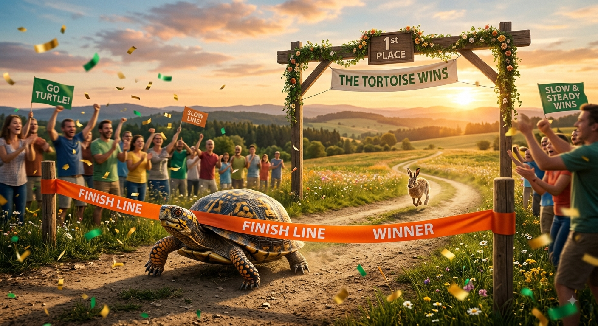

The word "agentic"
Goat diluted.
Most of what carries the label now is thin wrappers and marketing decks. Only a minority stayed in the real work from the first seed runs.
This is the bridge between serious engineering and the next developer/compute market. Beyond social-media seed running.
We are building
The Missing Infrastructure
Open Ledger + Skills Package Manager
Agent capabilities shouldn't be black boxes. We provide the protocol where specialized agent skills can be systematically versioned, openly traded, and cryptographically audited by the community.
Agentic Arena
A Kaggle-style arena dedicated entirely to agent engineering and compute alignment. Test architectures (Omnigent, AirLLM) against real, high-stakes synthetic environments to prove empirical dominance.
Usage-Backed Finance Layer
Funding that makes sense. A finance layer that capitalizes enterprise agent skills based entirely on actual usage and execution growth—operating with the undeniable truth of a clean bank statement.
Backed by Real Market Players
The true trajectory of open engineering isn't hidden in marketing slides—it's written in open-source adoption. We honor the builders and our loyal market players who track the pulse of real growth.
Explore Star History Insights